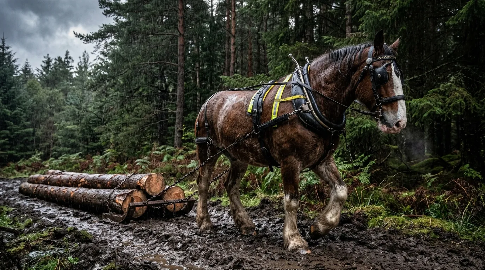
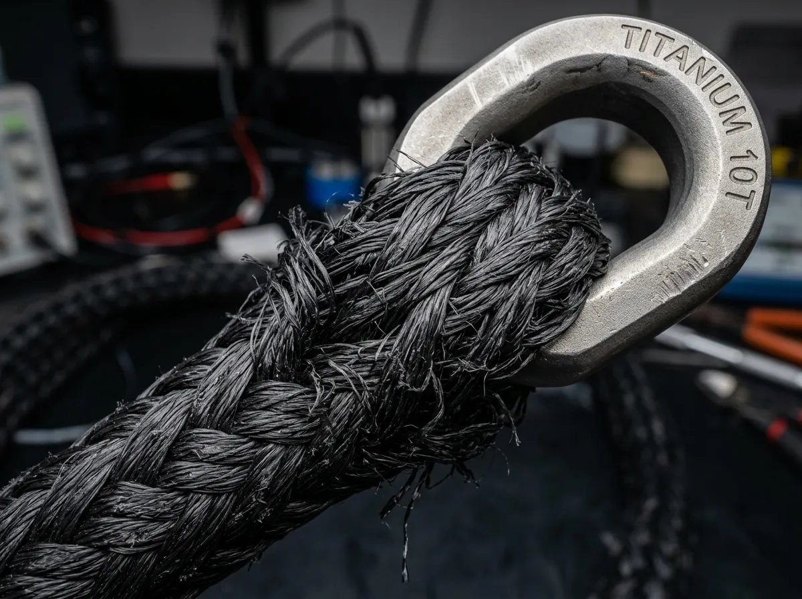
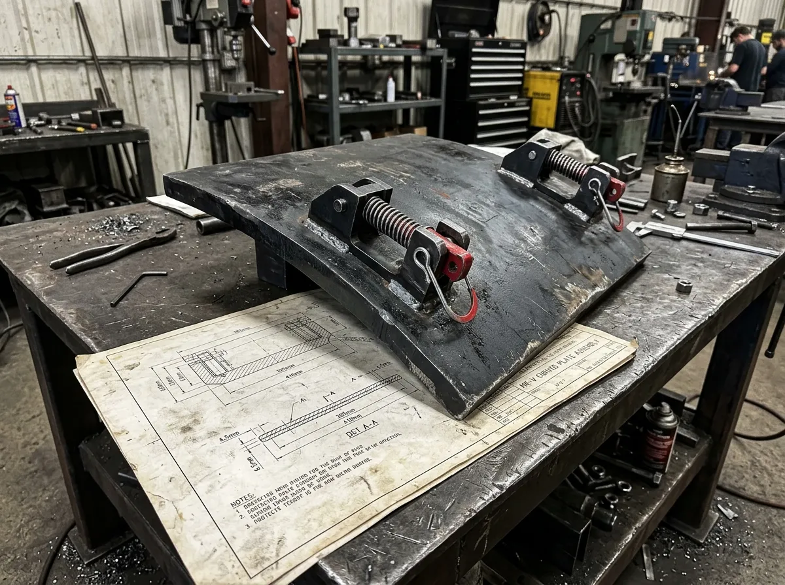
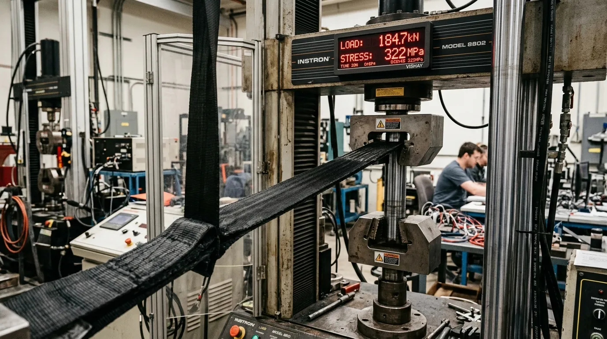
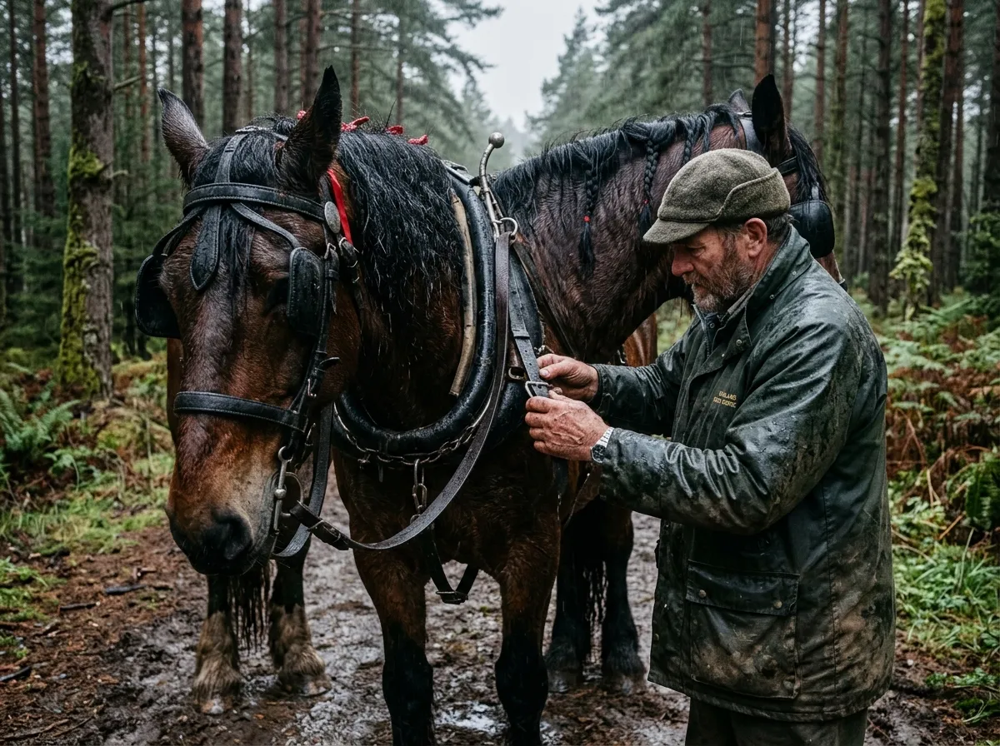
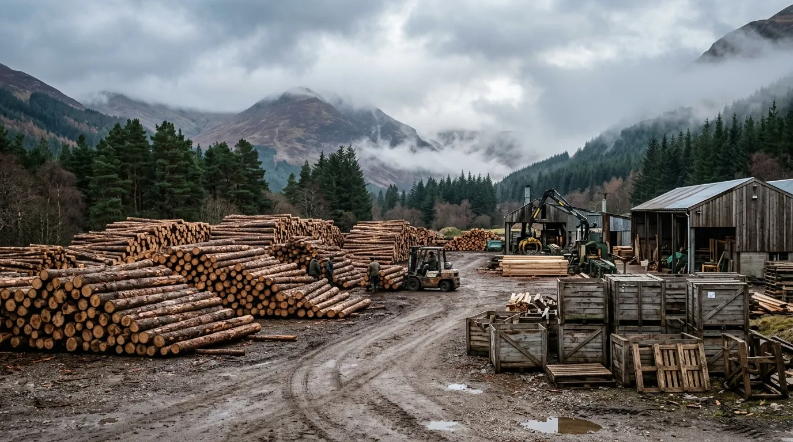

BALLISTIC LOGGING HARNESSES FOR HEAVY TIMBER EXTRACTION.
Military-grade aramid draft traces, titanium rigging hardware, and puncture-proof skidding collars for working forestry horses.
Trace & Tungsten manufactures extreme-duty draft horse logging harnesses at our Aviemore depot for commercial timber extraction teams. We replace fragile rotting leather and snapping chains with continuous-filament Kevlar webbing and forty-kilonewton braided polyethylene traces. Every harness assembly is pull-tested to failure thresholds in our hydraulic test jig and guaranteed for ten years of heavy peat-bog skidding.
01 // THE FORESTRY-ARMOUR ALLIANCE

Traditional leather horse logging tackle fails within three seasons in the Scottish Highlands. Acidic peat water rots vegetable-tanned straps, cold moisture hardens collar pads, and shock loads from caught granite boulders snap steel trace chains with lethal force. In 2018, the Strathspey Working Horse Forestry Syndicate partnered with defense technicians from Wolverhampton Composite Armours to engineer a modern, indestructible harness standard.
We replaced organic hide with multi-layer Kevlar 129 webbing sheathed in military ballistic Cordura, eliminating moisture absorption and mold growth completely. Draft traces are woven from high-modulus ultra-high-molecular-weight polyethylene, delivering forty-two kilonewtons of certified tensile breaking strength at a fraction of the weight of hardened steel chain. All load-bearing hardware is drop-forged from grade-five titanium and laser-cut Hardox 500 wear plate.
Our production is direct-to-contractor, shipping fully fitted harness rigs in sealed timber transit crates. Each rig includes integrated quick-release panic hitches tested under maximum timber draw, ensuring working teams extract hundred-tonne forestry allocations without tackle failure.
02 // BALLISTIC DRAFT HARNESS CATALOG
CLYDESDALE HEAVY DRAFT COLLAR
Engineered for massive continuous shock loads. Closed-cell nitrogen-injected EVA foam pad eliminates moisture retention. Encased in a Kevlar 129 outer shell to halt abrasion. Secured with grade-5 titanium hames and quick-lock pins for immediate panic release in dense brash.
42 KN ARAMID DRAFT TRACE PAIR
A 4.5-metre continuous-braid UHMWPE core delivering extreme tensile force with minimal kinetic recoil. Wrapped in a ballistic Cordura abrasion sleeve to withstand constant granite friction. Terminated with forged titanium locking clevis hooks.

HARDOX 500 TIMBER ARCH BELLY SKID
Vital underbelly protection for root-crawl skidding. Constructed from 4 mm laser-cut Hardox 500 plate, offering unyielding puncture resistance against shattered timber spears. Integrates seamlessly into the Heavy Draft harness system.

03 // TENSILE BENCH TELEMETRY & COLD SHOCK DATA

04 // COMMERCIAL FORESTRY VERIFICATION
"The aramid traces take brutal kinetic shock when a two-tonne pine log catches on granite. We've snapped steel chain before, but the Trace & Tungsten gear simply absorbs the spike and hauls true. It does not fail."
"In the deep peat bogs, standard leather rots off the horses within a year. This Kevlar rig shrugs off the acid water completely. We just hose them down at the end of a shift and hang them up."
"For steep-slope thinning, the Hardox belly skids are essential. They protect the team against shattered stumps and dense brash, allowing us to maintain high extraction tonnage safely."

05 // TRADE PROCUREMENT TERMINAL

GLENMORE TIMBER YARD DEPOT
Trace & Tungsten Heavy Rigging
Rothiemurchus Estate
Aviemore, Inverness-shire
PH22 1QU, Scotland
LOGISTICS CONTACT:
UHF RADIO: CH-04 AVIEMORE REPEATER
DIRECT COMMS: FREIGHT@TRACE-TUNGSTEN.CO.UK